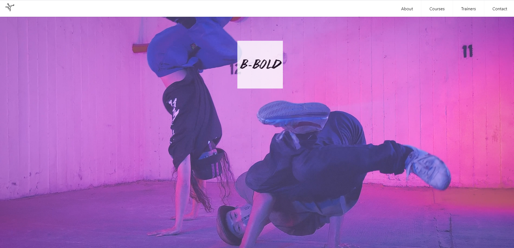

Two different dancing schools.
This project was focused on the design process, cooperating, and producing a website for a fictitious dancing school that targets a specific user segment.
Our 1st dancing school was focused on Breakdance. At first, we did a lot of research about breakdance in general and later on, we had a few interviews with breakdancers. During this project, we got introduced to the design thinking process and personas and they both made our process much easier. This was the first project where we were taught to create a mobile-first solution, which was a bit difficult as it was our first time. By the end of the 2 weeks, we had to hand over our project to another group.
We decided to do ---- The trainers page is my page.
We got Bollywood and we had to redesign and elaborate on their work.
We focused on branding and creating social media plans. We created a Golden Circle, Concept Poster, Content Plan, Idea Catalogue and upgraded the BMC.